O network pode ser utilizado em diversos âmbitos, no entanto, é mais comum nos depararmos com ele em um contexto profissional. Network é uma rede de conexões
A Rede Local, interligam computadores presentes dentro de um mesmo espaço físico. Interligam computadores presentes dentro do mesmo espaço físico. Isso acontece dentro de empresa, escola até mesmo de uma casa, sendo possível a troca de informações e recursos entre os dispositivos participantes.
Fonte:https://tahtec.com.br/
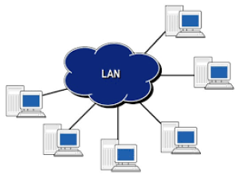Este tipo de rede é caracterizado por ter um alcance maior que as do tipo LAN, abrangendo cidades próximas ou regiões metropolitanas. Como por exemplo uma empresa que tem filiais na mesma cidade e precisam se interligar.
Fonte:https://tahtec.com.br/
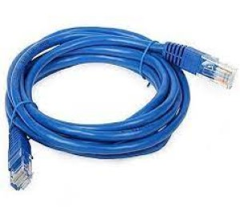A Rede Wan consegue abrange uma área geográfica muito maior, obtendo frequência em um país ou até mesmo um continente.
Fonte:https://tahtec.com.br/
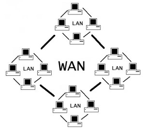Esse tipo de rede sem fio conecta-se à internet e é bastante usado tanto em lugares residenciais quanto em empresas em ambientes públicos.
Fonte:https://tahtec.com.br/
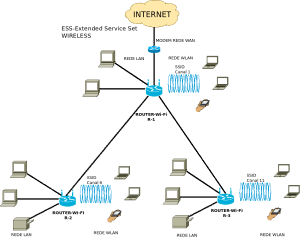Obtendo as mesmas funções da MAN, mas totalmente sem fio, com um alcance de muitos quilômetros, sendo possível conectar redes de escritórios de uma mesma empresa ou de campus de universidades.
Fonte:https://tahtec.com.br/
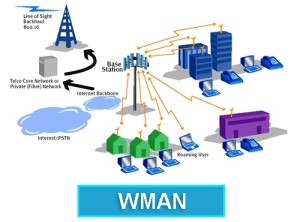Tendo um alcance bem maior, a rede de longa distância sem fio, alcança diversos lugares do mundo. Mas por esse mesmo motivo, a WWAN está sujeita a ruídos.
Fonte:https://tahtec.com.br/
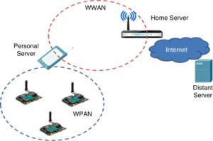São utilizadas para fazer a comunicação de um servidor e outros computadores, ficando restritas a isso.
Fonte:https://tahtec.com.br/
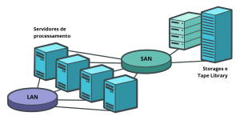Usadas para que os dispositivos se comuniquem dentro de uma distância bastante limitada. Um exemplo comum são as redes Bluetooth.
Fonte:https://tahtec.com.br/
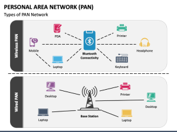A topologia de rede é a forma como você organiza os elementos de uma rede de comunicação. A estrutura topológica pode ser representada física ou logicamente.
É o tipo de configuração mais comum. A rede é organizada de forma que os nós sejam conectados a um hub central, que atua como um servidor. O hub gerencia a transmissão de dados pela rede. Ou seja, qualquer dado enviado pela rede viaja pelo hub central antes de terminar em seu destino.
Fonte:
Também chamada de topologia de backbone, bus ou linha, orienta os dispositivos ao longo de um único cabo que vai de uma extremidade da rede à outra. Os dados fluirão ao longo do cabo conforme ele se desloca até seu destino.
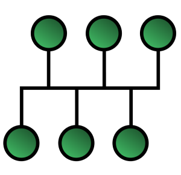Fonte:
Os nós são configurados em um padrão circular. Os dados viajam por cada dispositivo à medida que percorrem o anel. Em uma grande rede, repetidores podem ser necessários para evitar a perda de pacotes durante a transmissão. As topologias em anel podem ser configuradas como anel único (half-duplex) ou anel duplo (full-duplex) para permitir que o tráfego flua em ambas as direções simultaneamente.
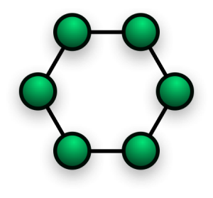Fonte:
Um nó central conecta hubs secundários. Esses hubs têm uma relação pai-filho com os dispositivos. O eixo central é como o tronco da árvore. Onde as ramificações se conectam estão os hubs secundários ou nós de controle e, em seguida, os dispositivos conectados são anexados aos branches
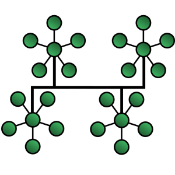Fonte:
Os nós são interconectados. Os modos full-mesh conectam todos os dispositivos na rede diretamente. Em uma topologia de malha parcial, a maioria dos dispositivos se conecta diretamente. Isso oferece vários caminhos para entrega de dados. Os dados são entregues pela distância mais curta disponível para transmissão.
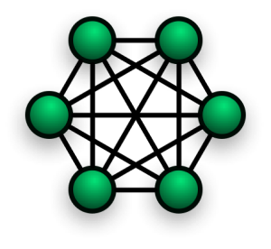Fonte:
Foi uma rede de computadores lançada em 1969 para fins acadêmicos e desativada 20 anos depois. A fusão da ARPANET com outras redes individuais de computadores ajudou a criar a internet. Além disso, vários protocolos atuais empregados por redes de computadores foram inicialmente desenvolvidos para a ARPANET, inclusive o atualmente popular conjunto de protocolos de controle de transmissão/protocolo da internet.
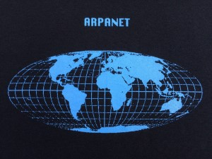É um meio de conexão a Internet que utiliza o par de fios de cobre (par trançado) da linha telefônica para poder levar mais do que uma simples fala (dados). Ele utiliza a sua linha de telefonia fixa para fornecer internet banda larga. É uma evolução do serviço dial-up, pois utiliza frequências distintas para telefone e internet (dados), possibilitando o uso simultâneo dos dois.
Fonte:https://www.gta.ufrj.br/
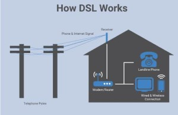Ethernet é uma arquitetura de interconexão para redes locais, Rede de Área Local (LAN) baseada no envio de pacotes. Ela define cabeamento e sinais elétricos para a camada física, e formato de pacotes e protocolos para a subcamada de controle de acesso ao meio (Media Access Control MAC) do modelo OSI.
Fonte: https://www.criandobits.com.br/
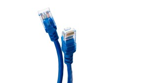Par trançado
O cabo de par trançado, conhecido como UTP (UnShielded Twisted Pair, ou par trançado sem blindagem) consiste em um par de fios, normalmente de cobre, trançados e revestidos com PVC, que é um material isolante. Existem diversas categorias desses cabos, cujo número de pares pode variar.
Fibra Óptica
É um meio físico que permite a transmissão de luz por reflexões contínuas dentro de uma superfície até a chegada da outra extremidade, sem perdas. Usada para transmissão de dados em vários segmentos. De formato diminuto, com material de fácil instalação e gerenciamento e um bom custo-benefício.
Fonte:https://www.cianet.com.br/
Coaxial
O primeiro tipo de cabeamento que surgiu no mercado foi o cabo coaxial. Há alguns anos, esse cabo era o que havia de mais avançado, sendo que a troca de dados entre dois computadores era coisa do futuro. Até hoje existem vários tipos de cabos coaxiais, cada um com suas características específicas. Alguns são melhores para transmissão em alta freqüência, outros têm atenuação mais baixa, e outros são imunes a ruídos e interferências. Os cabos coaxiais de alta qualidade não são maleáveis e são difíceis de instalar e os cabos de baixa qualidade podem ser inadequados para trafegar dados em alta velocidade e longas distâncias.
Fonte:https://www.teleco.com.br/
Rádio Difusão
Rádiodifusão é a transmissão de ondas de radiofrequência que por sua vez são moduladas, estas se propagam eletromagneticamente através do espaço. É um meio de telecomunicação ao qual a maioria da população tem acesso como ouvinte.
Fonte:pt.wikipedia.or
Infra Vermelho
O infravermelho realiza transmissão de dados por meio de um espectro de luz. Suas vantagens são componentes (transmissores e receptores) simples e de custo relativamente baixo, além da não interferência de aparelhos elétricos no sinal.
Fonte:https://www1.folha.uol.com.br/
Laser
A transmissão de dados por laser é realizada pelo envio de um sinal de luz codificado dentro de um domínio de frequência do infravermelho a uma velocidade que pode variar de 2Mbps a 155Mbps. O meio permite a transmissão de sinais em banda larga sem fio para internet, intranet, celulares, telefonia fixa, SMP.
Fonte:https://itforum.com.br/